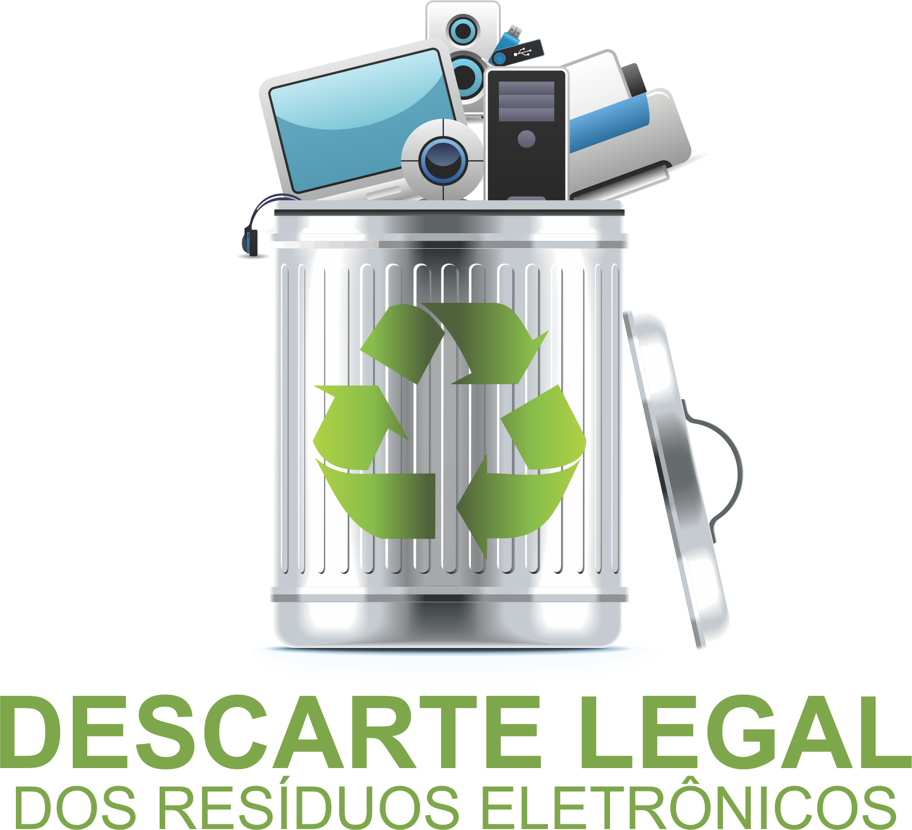

Importância
Devido ao descarte incorreto que muitas pessoas ainda realizam de seu lixo eletrônico, jogando-o em lixeiras comuns e misturando-o aos outros objetos de consumo, ainda há muitos prejuízos que são aplicados à natureza devido a esta prática, causando consequências a toda a população e podendo agravar os resultados ao longo do tempo. O principal problema é quando o lixo eletrônico em questão é diretamente jogado fora no meio ambiente, fazendo com que as substâncias que compõe o aparelho possam tornar-se agressivas para a natureza, afinal estes produtos contém chumbo, cádmio, mercúrio, berílio, etc. que são consideradas substâncias químicas que podem causar prejuízos quando ao solo e até mesmo a água, contaminando estas duas vertentes que fazem parte do meio ambiente. Desviando os fatos que ocorrem quanto aos prejuízos do descarte incorreto do lixo eletrônico quanto à natureza, também existem alguns problemas que são causados por jogar equipamentos eletrônicos fora de forma incorreta, aplicados aos próprios indivíduos, sendo que as mesmas substâncias químicas citadas acima podem trazer uma variedade de doenças, principalmente naquelas que frequentam lixões para sustentar-se e sobreviver, estando misturados com o lixo doméstico. A degradação de outros materiais que compõe os equipamentos eletrônicos também faz parte dos prejuízos do descarte incorreto, afetando o meio ambiente.
